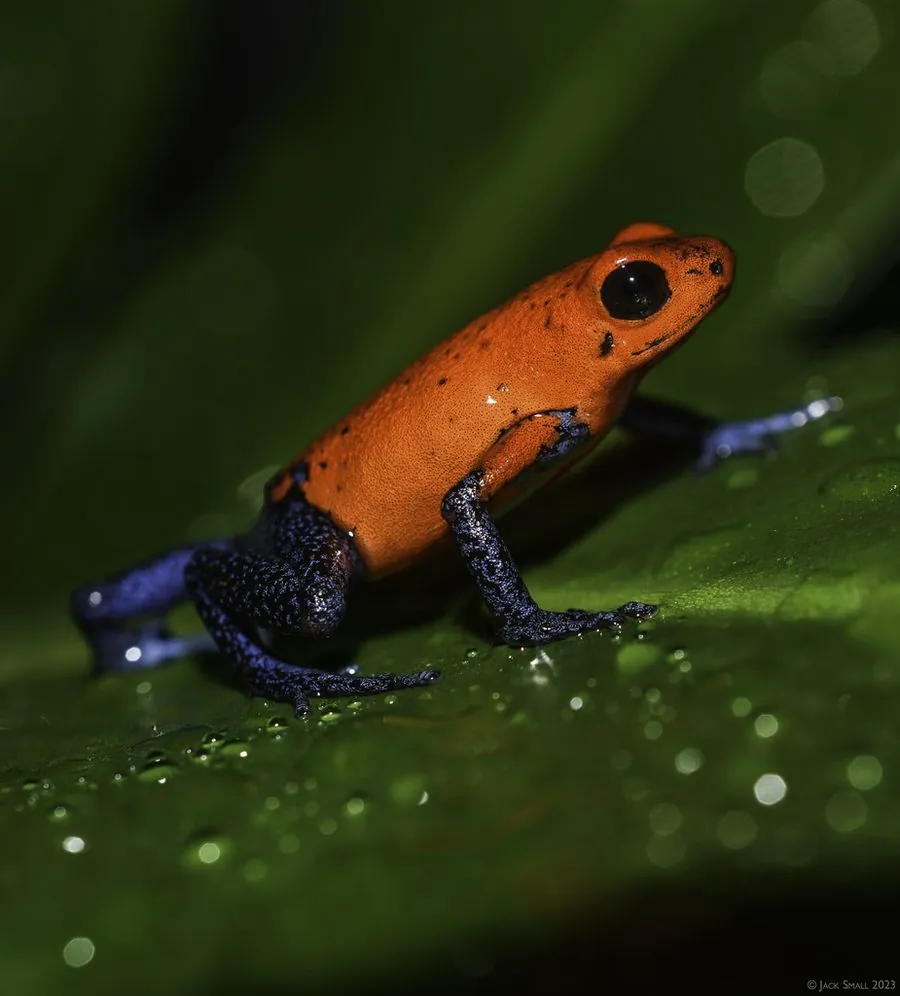

两栖动物 · 动物界
草莓箭毒蛙 Oophaga pumilio

中美洲雨林中体色鲜红的箭毒蛙，体长仅 2 厘米左右，皮肤毒素来自食物，雄蛙会把蝌蚪背到凤梨科植物叶腋中养育。
- 分类
- 门脊索动物门纲两栖纲目无尾目科箭毒蛙科属叶毒蛙属
- 栖息环境
- 中美洲热带雨林的落叶层、倒木与凤梨科植物附近
- 地理分布
- 尼加拉瓜东南部、哥斯达黎加至巴拿马西北部
- 保护级别
- IUCN 无危（LC）；非中国原产，在中国无保护级别
物种志
草莓箭毒蛙体长仅 1.7–2.2 厘米，雌性略大，是体型很小的箭毒蛙。它的皮肤呈鲜红或橙红色，四肢末端带蓝黑色，皮肤光滑湿润；不同产地种群体色差异很大，有的呈蓝、绿、橙等，是研究色型分化的经典材料。野生个体皮肤含有强效生物碱毒素，可麻痹捕食者神经，但毒素并非自身合成，而是来自取食的蚂蚁和螨虫等猎物。
它分布于尼加拉瓜东南部至巴拿马西北部的热带雨林，白天在地面落叶层活动，以蚂蚁、螨虫和甲虫为食。繁殖行为独特：雄蛙守护落叶上的卵，卵孵化后把蝌蚪逐个背到凤梨科植物积水的叶腋中，雌蛙则定期产下未受精卵喂养蝌蚪。由于雨林砍伐和宠物贸易，部分种群受到威胁，但整体尚属无危。
形态与习性
- 食性蚂蚁、螨虫和小型甲虫
- 体长1.7–2.2 cm
- 毒性皮肤含生物碱毒素，毒性来自食物，人工饲养个体毒性弱
- 繁殖卵生，雄蛙背蝌蚪到凤梨科植物叶腋中
- 活动节律昼行性，常在落叶层活动
- 寿命约 5–10 年
趣味知识
- 草莓箭毒蛙的毒素来自它吃下的蚂蚁和螨虫，人工改喂饲料后毒性会减弱。
- 雄蛙会把孵化的蝌蚪一只只背到树上的凤梨科植物叶腋水洼中。
- 同一片雨林中不同山头的草莓箭毒蛙，体色可能完全不同。